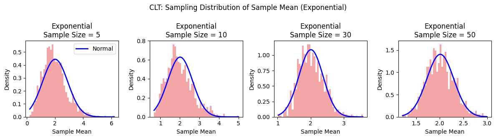

Problem 1
Exploring the Central Limit Theorem
The Central Limit Theorem (CLT) is a cornerstone of statistics, stating that the sampling distribution of the sample mean approaches a normal distribution as the sample size \(n\) increases, regardless of the population's underlying distribution. Mathematically, for a population with mean \(\mu\) and variance \(\sigma^2\), the sampling distribution of the sample mean \(\bar{x}\) is approximately normal with mean \(\mu\) and variance \(\frac{\sigma^2}{n}\) for sufficiently large \(n\). In this note, we explore the CLT through simulations using uniform, exponential, and binomial distributions to demonstrate how the sampling distribution of the sample mean behaves. The normal distribution is a special case where the population is already normally distributed, but the CLT's power lies in its applicability to any distribution, making it invaluable in statistical inference.
Common Distributions in Real-World Applications
Uniform: Computer-generated random numbers for simulations (e.g., Monte Carlo methods).
Exponential: Lifespan of electronic components before failure.
Binomial: Number of defective items in a batch of products during quality inspection.
Normal: Blood pressure readings in a healthy population.
Poisson: Number of cars passing through a toll booth in an hour.
Geometric: Number of attempts to open a combination lock until success.
Negative Binomial: Number of soccer games played until a team scores 3 goals.
Log-normal: Time to complete complex tasks (e.g., software development projects).
Definitions with Examples
Population
Definition: The entire group of individuals or instances about which conclusions are drawn.
Sample
Definition: A subset of the population selected for analysis, as studying the entire population is often infeasible.
Sample Size
Definition: The number of observations in a sample.
Sampling Distribution
Definition: The probability distribution of a statistic (e.g., sample mean) obtained from repeated samples of the same population.
Sample Mean
Definition: The average of a sample, used to estimate the population mean.
Advanced Concepts
Convergence to Normality
Definition: As sample size \(n\) increases, the sampling distribution of the sample mean \(\bar{x}\) approaches a normal distribution, regardless of the population’s distribution.
Skewness
Definition: A measure of a distribution’s asymmetry around its mean.
Kurtosis
Definition: A measure of a distribution’s "tailedness" compared to a normal distribution.
Variance
Definition: A measure of data spread from the mean.
Standard Deviation
Definition: The square root of variance, measuring spread in the same units as the data.
Normal Distribution
Definition: A symmetric, bell-shaped probability distribution defined by mean \(\mu\) and standard deviation \(\sigma\).
Sampling and Visualization


Parameter Exploration
Skewness/Kurtosis Impact
Uniform: Low skewness (symmetric) and low kurtosis (light tails) allow rapid convergence to normality, evident as the sampling distribution closely matches the normal curve even at \(n=5\).
Exponential: High skewness (right-skewed) and moderate kurtosis slow convergence, with noticeable normality emerging only at \(n=30\) or higher.
Binomial: Moderate skewness (depending on parameters) and kurtosis lead to gradual convergence, with a clear normal shape by \(n=50\).
Variance Impact
Across all distributions, the spread of the sampling distribution decreases as sample size \(n\) increases, consistent with the variance \(\frac{\sigma^2}{n}\). Uniform shows a narrower spread early (e.g., \(n=5\)), reflecting lower initial variance.
Exponential and Binomial exhibit wider spreads at small \(n\) due to higher variance, which narrows significantly by \(n=50\).
Observations
Uniform Distribution: As seen in the CLT sampling distribution graphs for the uniform distribution, its symmetry (low skewness and kurtosis) allows the sampling distribution to closely resemble a normal curve even at a small sample size of \(n=10\), as shown in the plot. Exponential Distribution: The graphs highlight the exponential distribution's high skewness and moderate kurtosis, necessitating larger sample sizes (\(n \geq 30\)) for the sampling distribution to approximate normality, with noticeable improvement visible from \(n=30\) onward. Binomial Distribution: Reflected in the binomial distribution plots, its discrete and bounded nature leads to a gradual convergence to normality, displaying central tendency that becomes more pronounced by \(n=50\). Variance Impact: The graphs across all distributions demonstrate that higher population variance \(\sigma^2\) results in wider sampling distributions at smaller \(n\) (e.g., exponential at \(n=5\)), with the standard error decreasing as \(\frac{\sigma}{\sqrt{n}}\) as sample size increases, aligning with CLT principles. Convergence Insight: The progression across the uniform, exponential, and binomial distribution plots confirms the CLT, showing that sample mean distributions approach normality as \(n\) increases, evident from the tightening fit to the normal curve from \(n=5\) to \(n=50\).
Real-World Implications of Exploring the Central Limit Theorem
Polling: The CLT enables accurate estimation of national opinions or voter preferences from small, random samples (e.g., 1,000 respondents).
Manufacturing: In quality control, sample averages from production batches can detect process drift, ensuring products stay within tolerance, leveraging the CLT's convergence to normality.
Finance: Risk and return models rely on the CLT to assume normality in aggregated data, allowing reliable predictions from sample means despite skewed individual data.
Healthcare: Estimating average patient recovery times or drug efficacy from clinical trial samples (e.g., binomial or exponential distributions) benefits from the CLT, enabling valid inferences as sample sizes grow.
Market Research: The CLT supports drawing conclusions about consumer behavior from survey samples, with the variance impact (narrowing at larger \(n\)) ensuring precision in mean estimates.